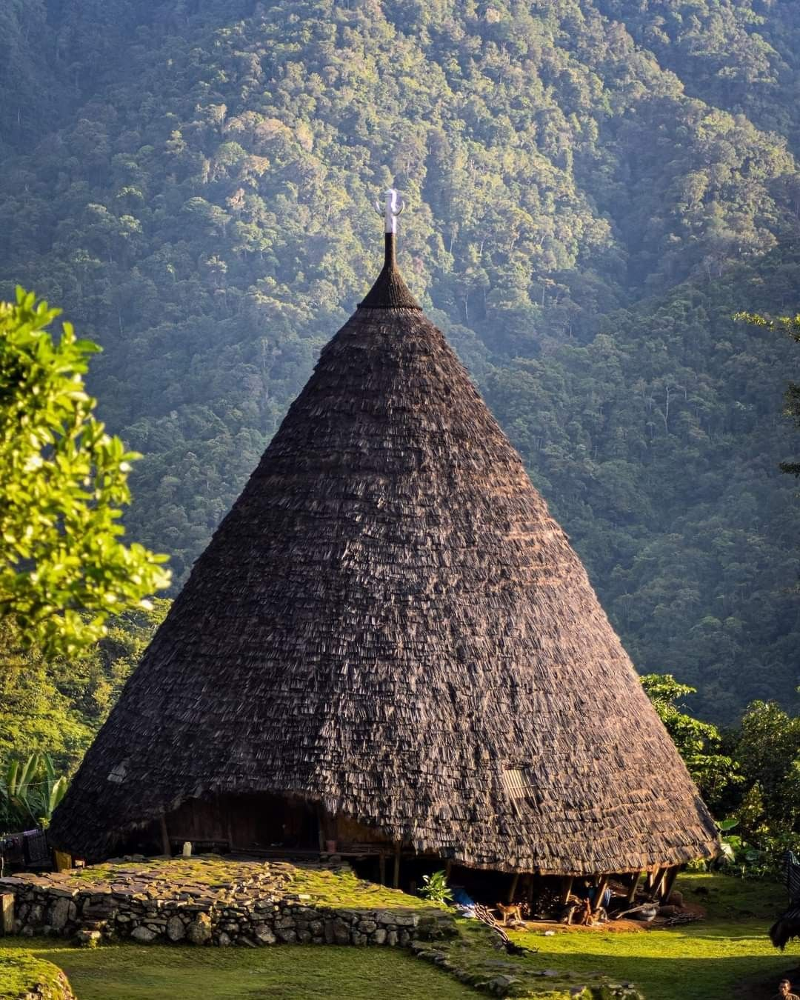

DISCOVER FLORES
Manggarai adalah wilayah indah di Flores Barat yang kaya akan warisan budaya luhur serta dikelilingi bentang alam pegunungan yang memukau. Dari keunikan rumah adat berbentuk kerucut Mbaru Niang hingga cantiknya kain tenun Songke, tradisi masyarakatnya senantiasa hidup dan terjaga harmonis dengan alam.
Mbaru Niang adalah rumah adat tradisional masyarakat Manggarai di Flores, Nusa Tenggara Timur. Rumah ini memiliki bentuk kerucut dengan atap yang tinggi dan terbuat dari bahan-bahan alami seperti bambu dan ijuk. Mbaru Niang melambangkan kebersamaan, kekeluargaan, dan kehidupan masyarakat Manggarai yang hidup secara komunal.
